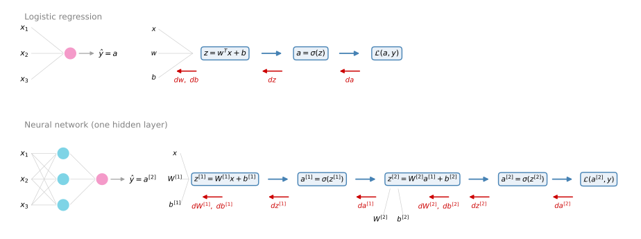
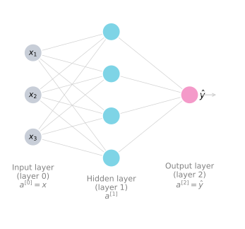
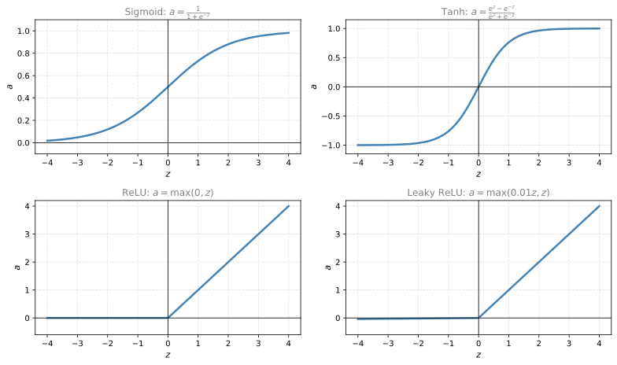

Shallow Neural Networks
deep-learning
neural-networks
activation-functions
One hidden layer networks: layer notation, computing the output, vectorizing across examples, and choosing activation functions and their derivatives.
You have learned to implement logistic regression as if it were a tiny neural network. This section builds the real thing, a neural network with one hidden layer. You will see what the pictures of neural networks mean, how such a network computes its output, how to vectorize that computation across an entire training set, and how to choose the activation function each layer applies. You met these ideas at a higher level in the machine learning course, in neural network intuition and the neural network model; here the focus is on the exact notation and implementation.
Neural Networks Overview
You can form a neural network by stacking together a lot of little sigmoid units. In logistic regression, a single node corresponded to two steps of calculation. First it computes the value \(z\), second it computes the activation \(a\). In a neural network, a stack of nodes performs a \(z\)-like calculation and an \(a\)-like calculation, and then another node performs another \(z\) and another \(a\) calculation. The figure below puts the two models side by side, each drawn twice, once as a network of nodes and once as its computation graph, with the forward pass in blue and the backward pass in red.
Here is how to read the figure.
- Each row shows one model, drawn twice. On the left, the familiar network picture, circles connected by lines, where every circle is a small unit doing a computation. On the right, the same model as a computation graph, where every rounded box is one calculation step, written out as a formula.
- Gray lines show values flowing into a computation. In the top row, the features \(x\) and the parameters \(w\) and \(b\) flow into the box that computes \(z\). In the bottom row, each \(z\) box receives the previous layer’s output plus its own parameters \(W\) and \(b\).
- Blue arrows point left to right. They are the forward pass, the order in which the network actually computes things when making a prediction: first \(z\), then \(a\), and at the very end the loss \(\mathcal{L}\), which measures how wrong the prediction was.
- Red arrows point right to left. They are the backward pass, the derivative computations. Each red label names the derivative computed at that position, and because every derivative is computed from the one to its right, you can read the red labels right to left as the exact order of backpropagation. Where a red arrow points at parameters, like \(dw, db\), it means those parameter derivatives branch off at that step, and they are what gradient descent uses to update the parameters.
Take a moment to read the top row this way. \(x, w, b\) flow in, the blue arrows carry the computation through \(z = w^T x + b\) and \(a = \sigma(z)\) to the loss, and the red arrows walk back through \(da\), then \(dz\), then \(dw, db\). Every piece of it is the logistic regression story you already know. The bottom row is the same story told twice in a row, once for each layer, and that is the whole point of the figure.
The new notation works like this. Inputting the features \(x\) together with some parameters \(W\) and \(b\) allows you to compute \(z^{[1]}\). The superscript square bracket refers to quantities associated with a stack of nodes, called a layer. A superscript square bracket two then refers to quantities associated with the next layer. These square brackets are not to be confused with the superscript round brackets, which refer to individual training examples. So \(x^{(i)}\) refers to the \(i\)-th training example, while \(^{[1]}\) and \(^{[2]}\) refer to layer 1 and layer 2 of the network.
Now read the bottom row of the figure left to right. After computing \(z^{[1]}\), similar to logistic regression, there is a computation of \(a^{[1]} = \sigma(z^{[1]})\). Then you compute \(z^{[2]}\) using another linear equation, and then \(a^{[2]}\), which is the final output of the network, used interchangeably with \(\hat{y}\), and finally the loss,
\[ x, W^{[1]}, b^{[1]} \;\longrightarrow\; z^{[1]} \;\longrightarrow\; a^{[1]} = \sigma\big(z^{[1]}\big) \;\longrightarrow\; z^{[2]} \;\longrightarrow\; a^{[2]} = \sigma\big(z^{[2]}\big) = \hat{y} \;\longrightarrow\; \mathcal{L}\big(a^{[2]}, y\big) \]
The key intuition to take away is that whereas logistic regression had one \(z\) followed by an \(a\) calculation, this neural network just does it multiple times, a \(z\) followed by an \(a\), then another \(z\) followed by another \(a\), before finally computing the loss at the end.
You remember that for logistic regression there was also a backward calculation to compute derivatives, \(da\), then \(dz\), then \(dw\) and \(db\), the red arrows in the top row. In the same way, a neural network ends up with a backward, right-to-left calculation, the red arrows in the bottom row, that computes \(da^{[2]}\), \(dz^{[2]}\), which allow you to compute \(dW^{[2]}\), \(db^{[2]}\), then \(da^{[1]}\), \(dz^{[1]}\), and finally \(dW^{[1]}\), \(db^{[1]}\). So a neural network is basically logistic regression repeated twice, forward and then backward.
Review Questions
1. What is the difference between the superscripts \(^{[1]}\) and \(^{(1)}\)?
TipAnswer
Square brackets refer to a layer of the network, so \(z^{[1]}\) belongs to layer 1. Round brackets refer to a training example, so \(x^{(1)}\) is the first training example. The two are unrelated and can appear together, as in \(a^{[2](i)}\).
1. In one sentence, how does the computation of a one-hidden-layer network relate to logistic regression?
TipAnswer
It is logistic regression repeated. Each layer performs the same two-step pattern, a linear \(z\) calculation followed by an activation \(a\) calculation, and the backward pass likewise repeats the derivative steps layer by layer from right to left.
Neural Network Representation
Here is a picture of a neural network with a single hidden layer, with names for its parts.

- The input features \(x_1, x_2, x_3\) stacked up vertically form the input layer of the neural network. Maybe not surprisingly, it contains the inputs to the network.
- The next layer of circles is called a hidden layer.
- The final layer, here formed by just one node, is the output layer, responsible for generating the predicted value \(\hat{y}\).
Why “hidden”? In a neural network trained with supervised learning, the training set contains values of the inputs \(x\) and the target outputs \(y\). The true values for the nodes in the middle are not observed in the training set. You see what the inputs are and what the output should be, but the values in the hidden layer are not seen in the training set. That explains the name.
Activations Notation
Previously we used the vector \(x\) to denote the input features. An alternative notation for the values of the input features is \(a^{[0]}\). The term \(a\) stands for activations, and refers to the values that different layers of the network are passing on to the subsequent layers. The input layer passes the value \(x\) to the hidden layer, so we call it the activations of the input layer, \(a^{[0]}\).
The hidden layer in turn generates some set of activations \(a^{[1]}\). Its first unit generates the value \(a^{[1]}_1\), the second node the value \(a^{[1]}_2\), and so on. With four hidden units, \(a^{[1]}\) is a four dimensional vector (in Python, a \(4 \times 1\) matrix, a column vector),
\[ a^{[1]} = \begin{bmatrix} a^{[1]}_1 \\ a^{[1]}_2 \\ a^{[1]}_3 \\ a^{[1]}_4 \end{bmatrix} \]
Finally, the output layer generates some value \(a^{[2]}\), which is just a real number, and \(\hat{y}\) takes on the value of \(a^{[2]}\). This is analogous to how logistic regression had \(\hat{y} = a\), where with only one output layer we did not bother with the square bracket superscripts. Now the superscript explicitly indicates which layer each value came from.
Counting Layers, and the Parameters
One funny thing about notational conventions is that the network above is called a two layer neural network. The reason is that when counting layers, the input layer is not counted. The hidden layer is layer 1 and the output layer is layer 2, with the input layer as layer 0. Technically there are maybe three layers, but conventional usage in research papers and in this course counts this as a two layer network.
The hidden and output layers have parameters associated with them. The hidden layer has parameters \(W^{[1]}\) and \(b^{[1]}\), where in this example \(W^{[1]}\) is a \(4 \times 3\) matrix and \(b^{[1]}\) is a \(4 \times 1\) vector. The 4 comes from having four hidden units, and the 3 from the three input features. The output layer has \(W^{[2]}\), a \(1 \times 4\) matrix, and \(b^{[2]}\), a \(1 \times 1\) number, since the hidden layer has four units feeding one output unit. The next section shows where these dimensions come from.
Review Questions
1. Why is the middle layer called a hidden layer?
TipAnswer
Because its true values are not observed in the training set. The training set shows the inputs \(x\) and the target outputs \(y\), but not what the values of the middle nodes should be.
1. Why is the network above called a two layer neural network even though it draws three columns of nodes?
TipAnswer
By convention the input layer is not counted as an official layer. The hidden layer is layer 1 and the output layer is layer 2, and the input layer is referred to as layer 0.
1. For the 3-feature, 4-hidden-unit, 1-output network, what are the shapes of \(W^{[1]}\), \(b^{[1]}\), \(W^{[2]}\), and \(b^{[2]}\)?
TipAnswer
\(W^{[1]}\) is \(4 \times 3\) (four hidden units by three input features), \(b^{[1]}\) is \(4 \times 1\), \(W^{[2]}\) is \(1 \times 4\) (one output unit by four hidden units), and \(b^{[2]}\) is \(1 \times 1\).
1. What does the notation \(a^{[0]}\) refer to, and why is the letter \(a\) used?
TipAnswer
\(a^{[0]}\) is an alias for the input feature vector \(x\). The letter \(a\) stands for activations, the values a layer passes on to the next layer, and the input layer passes \(x\) to the hidden layer.
1. Consider a one hidden layer neural network with four input features \(x_1, \ldots, x_4\), two hidden units, and one output unit. Which of the following statements are true? (Check all that apply.)
- \(W^{[1]}\) will have shape \((4, 2)\).
- \(W^{[2]}\) will have shape \((2, 1)\).
- \(b^{[1]}\) will have shape \((4, 2)\).
- \(b^{[1]}\) will have shape \((2, 1)\).
- \(W^{[1]}\) will have shape \((2, 4)\).
- \(W^{[2]}\) will have shape \((1, 2)\).
TipAnswer
d, e, and f. The number of rows in \(W^{[k]}\) is the number of neurons in layer \(k\), and the number of columns is the number of inputs feeding that layer, so \(W^{[1]}\) is \((2, 4)\) and \(W^{[2]}\) is \((1, 2)\). Each \(b^{[k]}\) is a column vector with one row per neuron in layer \(k\), so \(b^{[1]}\) is \((2, 1)\). Options a, b, and c have the dimensions flipped or wrong.
Computing a Neural Network’s Output
Let us go through exactly how the network computes its output. The punch line will be that it is like logistic regression, repeated a lot of times.
We said before that the circle in logistic regression represents two steps of computation. You compute \(z = w^T x + b\), and then the activation \(a = \sigma(z)\). A neural network just does this a lot more times. Focus on the first node of the hidden layer. It does the same two steps,
\[ z^{[1]}_1 = w^{[1]\,T}_1 x + b^{[1]}_1 \qquad a^{[1]}_1 = \sigma\big(z^{[1]}_1\big) \]
The notational convention is that \(a^{[l]}_i\) has the layer number \(l\) in the superscript square brackets and the node number \(i\) in the subscript. The node we are looking at is layer 1, hidden node 1, which is why both indices are one. The second node of the hidden layer does the analogous computation with subscript 2,
\[ z^{[1]}_2 = w^{[1]\,T}_2 x + b^{[1]}_2 \qquad a^{[1]}_2 = \sigma\big(z^{[1]}_2\big) \]
and hidden units three and four follow the same pattern. Writing out the four pairs of equations and computing them with a for loop would be really inefficient, so let us vectorize them.
Take the four vectors \(w^{[1]}_1, \ldots, w^{[1]}_4\) and stack their transposes as rows of a matrix. Another way to think of this is that there are four logistic regression units here, each with its own parameter vector, and stacking the four vectors gives a \(4 \times 3\) matrix. Multiplying it by \(x\) and adding the stacked biases reproduces the four \(z\) values in one shot,
\[ \underbrace{\begin{bmatrix} \text{---}\; w^{[1]\,T}_1 \;\text{---} \\ \text{---}\; w^{[1]\,T}_2 \;\text{---} \\ \text{---}\; w^{[1]\,T}_3 \;\text{---} \\ \text{---}\; w^{[1]\,T}_4 \;\text{---} \end{bmatrix}}_{W^{[1]}} \begin{bmatrix} x_1 \\ x_2 \\ x_3 \end{bmatrix} + \underbrace{\begin{bmatrix} b^{[1]}_1 \\ b^{[1]}_2 \\ b^{[1]}_3 \\ b^{[1]}_4 \end{bmatrix}}_{b^{[1]}} = \begin{bmatrix} w^{[1]\,T}_1 x + b^{[1]}_1 \\ w^{[1]\,T}_2 x + b^{[1]}_2 \\ w^{[1]\,T}_3 x + b^{[1]}_3 \\ w^{[1]\,T}_4 x + b^{[1]}_4 \end{bmatrix} = \begin{bmatrix} z^{[1]}_1 \\ z^{[1]}_2 \\ z^{[1]}_3 \\ z^{[1]}_4 \end{bmatrix} = z^{[1]} \]
One rule of thumb helps navigate vectorization. When we have different nodes in a layer, we stack them vertically. That is why \(z^{[1]}_1\) through \(z^{[1]}_4\) stack into the column vector \(z^{[1]}\). The \(4 \times 3\) matrix of stacked weight rows is called \(W^{[1]}\), and the \(4 \times 1\) vector of biases is \(b^{[1]}\). The activations stack the same way, and the sigmoid applies element-wise. So the first layer is
\[ z^{[1]} = W^{[1]} x + b^{[1]} \qquad a^{[1]} = \sigma\big(z^{[1]}\big) \]
with dimensions \((4, 1) = (4, 3)(3, 1) + (4, 1)\). Through a similar derivation, the output layer is
\[ z^{[2]} = W^{[2]} a^{[1]} + b^{[2]} \qquad a^{[2]} = \sigma\big(z^{[2]}\big) = \hat{y} \]
where \(W^{[2]}\) is \(1 \times 4\) and \(b^{[2]}\) is \(1 \times 1\), so \(z^{[2]}\) is just a real number. If you cover up the left part of the network, this last output unit is a lot like logistic regression, except that instead of writing the parameters as \(w\) and \(b\), we write them as \(W^{[2]}\) and \(b^{[2]}\), with \(W^{[2]}\) playing the role of \(w^T\). And remember \(x = a^{[0]}\), so you can also replace the \(x\) in the first equation with \(a^{[0]}\).
So to compute the output of this neural network for one input, all you need are four lines of code, the vectorized implementation of the four hidden logistic-regression-like units followed by the output unit. Next, similar to logistic regression, we want to vectorize across multiple training examples too, by stacking training examples in the columns of a matrix.
Review Questions
1. In the notation \(a^{[l]}_i\), what do \(l\) and \(i\) refer to?
TipAnswer
The superscript \(l\) in square brackets is the layer number, and the subscript \(i\) is the node within that layer. So \(a^{[1]}_2\) is the activation of the second hidden unit in layer 1.
1. How is the matrix \(W^{[1]}\) built from the per-unit parameter vectors, and why does \(W^{[1]} x + b^{[1]}\) compute all four \(z\) values at once?
TipAnswer
Each hidden unit is like a little logistic regression with its own vector \(w^{[1]}_i\). Stacking the four transposed vectors as the rows of a matrix gives the \(4 \times 3\) matrix \(W^{[1]}\). By the rules of matrix multiplication, row \(i\) of \(W^{[1]} x\) is exactly \(w^{[1]\,T}_i x\), and adding the stacked biases gives each \(z^{[1]}_i\) in the corresponding row.
1. Write the four equations that compute the output of a one-hidden-layer network for a single input \(x\).
TipAnswer
\[ z^{[1]} = W^{[1]} x + b^{[1]} \qquad a^{[1]} = \sigma\big(z^{[1]}\big) \qquad z^{[2]} = W^{[2]} a^{[1]} + b^{[2]} \qquad a^{[2]} = \sigma\big(z^{[2]}\big) = \hat{y} \]
1. When vectorizing, what does stacking vertically correspond to within one layer?
TipAnswer
Different nodes in the layer. The values \(z^{[1]}_1\) through \(z^{[1]}_4\) of the four hidden units stack vertically into the column vector \(z^{[1]}\), and the activations stack the same way into \(a^{[1]}\).
1. Which of the following are true? (Check all that apply.)
- \(w^{[4]}_3\) is the column vector of parameters of the third layer and fourth neuron.
- \(a^{[2]}_3\) denotes the activation vector of the second layer for the third example.
- \(a^{[2]}\) denotes the activation vector of the second layer.
- \(w^{[4]}_3\) is the column vector of parameters of the fourth layer and third neuron.
- \(a^{[3](2)}\) denotes the activation vector of the second layer for the third example.
- \(w^{[4]}_3\) is the row vector of parameters of the fourth layer and third neuron.
TipAnswer
c and d. The square bracket superscript indexes the layer and the subscript indexes the neuron within that layer, so \(a^{[2]}\) is the activation vector of layer 2 and \(w^{[i]}_j\) is the column vector of parameters of the \(j\)-th neuron in layer \(i\). Option b is wrong because \(a^{[2]}_3\) is the activation of the third neuron in layer 2 (examples use round brackets, not subscripts). Option e is wrong because \(a^{[3](2)}\) would be the activation vector of the third layer for the second example. Options a and f mix up the indices or the vector orientation.
Vectorizing Across Multiple Examples
The four equations above compute \(a^{[2]} = \hat{y}\) for a single training example. With \(m\) training examples, you would need to repeat the process for each one: use \(x^{(1)}\) to compute \(\hat{y}^{(1)}\), then \(x^{(2)}\) to compute \(\hat{y}^{(2)}\), and so on down to \(x^{(m)}\). In the activation notation this is \(a^{[2](1)}, a^{[2](2)}, \ldots, a^{[2](m)}\), where in \(a^{[2](i)}\) the round bracket \((i)\) refers to training example \(i\) and the square bracket \([2]\) refers to layer 2.
An unvectorized implementation would loop for \(i = 1\) to \(m\) over the four equations, adding the superscript \((i)\) to every variable that depends on the training example,
\[ z^{[1](i)} = W^{[1]} x^{(i)} + b^{[1]} \quad a^{[1](i)} = \sigma\big(z^{[1](i)}\big) \quad z^{[2](i)} = W^{[2]} a^{[1](i)} + b^{[2]} \quad a^{[2](i)} = \sigma\big(z^{[2](i)}\big) \]
We would like to vectorize the whole computation to get rid of this for loop. (In case this seems like a lot of nitty gritty linear algebra, being able to implement this correctly really matters in the deep learning era, and the notation in this course was chosen carefully to make these vectorization steps as easy as possible.)
Recall that \(X\) is the matrix of training examples stacked up in columns, an \(n_x \times m\) matrix. Here is the punch line. The vectorized implementation is
\[ Z^{[1]} = W^{[1]} X + b^{[1]} \qquad A^{[1]} = \sigma\big(Z^{[1]}\big) \qquad Z^{[2]} = W^{[2]} A^{[1]} + b^{[2]} \qquad A^{[2]} = \sigma\big(Z^{[2]}\big) \]
The analogy is that just as stacking the lowercase \(x\) vectors in columns gave the capital matrix \(X\), stacking the column vectors \(z^{[1](1)}, z^{[1](2)}, \ldots, z^{[1](m)}\) in columns gives the matrix \(Z^{[1]}\), and stacking \(a^{[1](1)}, \ldots, a^{[1](m)}\) gives \(A^{[1]}\), and similarly for \(Z^{[2]}\) and \(A^{[2]}\).
One property of this notation helps you think about the matrices. In \(Z\) and \(A\), the horizontal index scans across training examples, and the vertical index scans across nodes of the layer. For example, the top left value of \(A^{[1]}\) is the activation of the first hidden unit on the first training example. Moving down goes to the second hidden unit on that same example; moving right goes to the first hidden unit on the second training example, until the bottom right value is the activation of the last hidden unit on the final training example. The same intuition holds for \(X\), where vertical corresponds to the different input features (the nodes of the input layer) and horizontal to the different training examples.
Review Questions
1. In \(a^{[2](i)}\), what does each superscript mean?
TipAnswer
The square bracket \([2]\) is the layer (the output layer here), and the round bracket \((i)\) is the training example. So \(a^{[2](i)}\) is the network’s output on training example \(i\).
1. Write the four vectorized equations that compute the forward pass on the entire training set.
TipAnswer
\[ Z^{[1]} = W^{[1]} X + b^{[1]} \qquad A^{[1]} = \sigma\big(Z^{[1]}\big) \qquad Z^{[2]} = W^{[2]} A^{[1]} + b^{[2]} \qquad A^{[2]} = \sigma\big(Z^{[2]}\big) \] where \(X\) stacks the examples in columns.
1. In the matrix \(A^{[1]}\), what do the horizontal and vertical indices correspond to?
TipAnswer
Horizontally, different training examples (left to right scans the training set). Vertically, different hidden units of the layer. The top left entry is the first hidden unit’s activation on the first training example.
1. For a network with two input features, four hidden units, and one output unit, trained on \(m\) examples at once, what are the dimensions of \(Z^{[1]}\) and \(A^{[1]}\)?
- \(Z^{[1]}\) and \(A^{[1]}\) are \((4, 2)\)
- \(Z^{[1]}\) and \(A^{[1]}\) are \((4, 1)\)
- \(Z^{[1]}\) and \(A^{[1]}\) are \((4, m)\)
- \(Z^{[1]}\) and \(A^{[1]}\) are \((1, 4)\)
TipAnswer
c. Vertically the matrices scan the four hidden units, and horizontally they scan the \(m\) training examples, one column per example. So both \(Z^{[1]}\) and \(A^{[1]}\) are \((4, m)\). Option b would be the shape of \(z^{[1]}\) for a single example.
Why the Vectorization Works
Here is a bit more justification for why the equations above are a correct vectorization. To simplify, ignore \(b\) for a moment (say \(b = 0\); the argument works with a small change when \(b\) is non-zero).
For individual examples, the first layer computes \(W^{[1]} x^{(1)}\), which is some column vector, \(W^{[1]} x^{(2)}\), another column vector, and \(W^{[1]} x^{(3)}\), a third column vector, and these are exactly \(z^{[1](1)}, z^{[1](2)}, z^{[1](3)}\). Now form the matrix \(X\) by stacking the three examples side by side. If you think about how matrix multiplication works, multiplying \(W^{[1]}\) by \(X\) produces a matrix whose first column is exactly \(W^{[1]} x^{(1)}\), whose second column is \(W^{[1]} x^{(2)}\), and whose third column is \(W^{[1]} x^{(3)}\),
\[ W^{[1]} X = W^{[1]} \begin{bmatrix} | & | & | \\ x^{(1)} & x^{(2)} & x^{(3)} \\ | & | & | \end{bmatrix} = \begin{bmatrix} | & | & | \\ z^{[1](1)} & z^{[1](2)} & z^{[1](3)} \\ | & | & | \end{bmatrix} = Z^{[1]} \]
With more examples there would be more columns. And when you add \(b^{[1]}\) back in, Python broadcasting adds it individually to each column of the matrix, so the values are still correct. This justifies the first of the four equations, and a similar analysis shows the other steps also work with the same logic. When you stack the inputs in columns, the equation produces the corresponding outputs also stacked in columns.
One last observation. Because \(x = a^{[0]}\) (so \(x^{(i)} = a^{[0](i)}\)), the first pair of equations can also be written \(Z^{[1]} = W^{[1]} A^{[0]} + b^{[1]}\), and then the two pairs of equations look identical with all the indices advanced by one. This shows that the different layers of a neural network are roughly doing the same computation over and over. Deeper neural networks, coming later in the course, are basically taking these two steps and repeating them even more times.
So far we have used the sigmoid function everywhere. It turns out that is actually not the best choice. Enter activation functions.
Review Questions
1. Why does \(W^{[1]} X\) produce the columns \(z^{[1](i)}\) automatically?
TipAnswer
Matrix multiplication acts column by column on the right factor. Column \(i\) of \(W^{[1]} X\) is \(W^{[1]}\) times column \(i\) of \(X\), which is \(W^{[1]} x^{(i)} = z^{[1](i)}\). Adding \(b^{[1]}\) broadcasts it to every column, keeping the values correct.
1. What symmetry appears when you write \(x\) as \(a^{[0]}\), and what does it suggest about deeper networks?
TipAnswer
The layer 1 equations \(Z^{[1]} = W^{[1]} A^{[0]} + b^{[1]}\), \(A^{[1]} = \sigma(Z^{[1]})\) and the layer 2 equations are the same computation with every index advanced by one. Each layer does the same thing, so deeper networks just repeat these two steps more times.
1. Which of these is a correct vectorized implementation of forward propagation for layer \(l\), where \(1 \leq l \leq L\)?
- \(Z^{[l]} = W^{[l]} A^{[l]} + b^{[l]}\) and \(A^{[l+1]} = g^{[l+1]}\big(Z^{[l]}\big)\)
- \(Z^{[l]} = W^{[l]} A^{[l]} + b^{[l]}\) and \(A^{[l+1]} = g^{[l]}\big(Z^{[l]}\big)\)
- \(Z^{[l]} = W^{[l]} A^{[l-1]} + b^{[l]}\) and \(A^{[l]} = g^{[l]}\big(Z^{[l]}\big)\)
- \(Z^{[l]} = W^{[l-1]} A^{[l]} + b^{[l-1]}\) and \(A^{[l]} = g^{[l]}\big(Z^{[l]}\big)\)
TipAnswer
c. Layer \(l\) takes the previous layer’s activations \(A^{[l-1]}\) as input, applies its own parameters \(W^{[l]}\) and \(b^{[l]}\), and passes the result through its own activation function to produce \(A^{[l]}\). This is exactly the layer 1 and layer 2 pattern with every index advanced to \(l\).
Activation Functions
When you build your neural network, one of the choices you get to make is which activation function to use in the hidden layers, and at the output unit. So far we have just been using the sigmoid, but sometimes other choices work much better. In the forward propagation equations, the general case replaces \(\sigma\) with some function \(g\),
\[ a^{[1]} = g^{[1]}\big(z^{[1]}\big) \qquad a^{[2]} = g^{[2]}\big(z^{[2]}\big) \]
where \(g\) can be a nonlinear function that may not be the sigmoid, and the square bracket superscripts indicate that different layers can use different activation functions. Here are the main options.

Tanh Almost Always Beats Sigmoid
An activation function that almost always works better than the sigmoid is the hyperbolic tangent,
\[ a = \tanh(z) = \frac{e^{z} - e^{-z}}{e^{z} + e^{-z}} \]
which goes between \(-1\) and \(+1\). Mathematically it is a shifted version of the sigmoid, moved so that it crosses the point \((0, 0)\). For hidden units, letting \(g(z) = \tanh(z)\) almost always works better, because with values between \(-1\) and \(+1\), the mean of the activations coming out of the hidden layer is closer to zero. Just as centering the training data sometimes helps a learning algorithm, using tanh instead of sigmoid has the effect of centering the data flowing to the next layer around zero rather than around 0.5, which makes learning for the next layer a little bit easier. (More on this in the second course, with optimization algorithms.)
One takeaway: pretty much never use the sigmoid activation in hidden layers anymore, since tanh is almost always strictly superior. The one exception is the output layer for binary classification, where \(y\) is 0 or 1, so you want \(\hat{y}\) between 0 and 1 rather than between \(-1\) and 1. In that case you might have \(g^{[1]} = \tanh\) for the hidden layer and \(g^{[2]} = \sigma\) for the output layer, an example of activation functions differing per layer.
ReLU, the Default Choice
One downside of both sigmoid and tanh is that when \(z\) is very large or very small, the slope of the function becomes very small, close to zero, which can slow down gradient descent. A very popular alternative is the rectified linear unit,
\[ a = \max(0, z) \]
The derivative is 1 as long as \(z\) is positive and 0 when \(z\) is negative. (Technically the derivative at exactly \(z = 0\) is not well defined, but in a computer the odds of hitting exactly zero are tiny, and you can pretend the derivative there is 1 or 0 and everything works fine.)
Rules of thumb for choosing activation functions:
- If the output is a 0/1 value (binary classification), the sigmoid is the natural choice for the output layer.
- For all other units, ReLU is increasingly the default. If you are not sure what to use for a hidden layer, use ReLU, which is what most people use these days, although the tanh also appears.
One disadvantage of ReLU is that the derivative is zero for negative \(z\). In practice this works just fine, but there is a variant called the Leaky ReLU, which takes a slight slope for negative \(z\) instead of being flat,
\[ a = \max(0.01 z, z) \]
This usually works better than ReLU, although it is just not used as much in practice. Either one should be fine, and if you had to pick one, ReLU is the usual choice. (Why the constant 0.01? You can also make it another parameter of the learning algorithm, and some people say that works even better, but it is rarely done. Feel free to try it in your application.)
The advantage of both ReLU and Leaky ReLU is that for a lot of the space of \(z\), the slope of the activation function is far from zero, so in practice a network with ReLU activations often learns much faster than with tanh or sigmoid, mainly because there is less of the slope-going-to-zero effect that slows learning down. Even though half of the range of \(z\) has slope zero for ReLU, enough hidden units have \(z > 0\) for learning to stay fast on most training examples.
Recap and Practical Advice
Pros and cons in one pass. Sigmoid: never use it except for the output layer of binary classification, or maybe almost never, since tanh is pretty much strictly superior. Tanh: better than sigmoid for hidden layers. ReLU: the most commonly used default, use it if you are not sure. Leaky ReLU: feel free to try it too.
One of the things you see in deep learning is that you often have a lot of choices, the number of hidden units, the activation function, how to initialize the weights, and it is sometimes difficult to get good guidelines for exactly what works best for your problem. A common piece of advice: if you are not sure which activation function works best, try them all, evaluate on a holdout validation set (a development set, discussed later), and see which one works better. Testing the choices for your own application future-proofs your architecture better than any fixed rule such as “always use ReLU.” The activation functions page of the machine learning course tells the same story from a different angle.
Review Questions
1. Why does tanh almost always beat sigmoid for hidden units?
TipAnswer
Tanh outputs values between \(-1\) and \(+1\), so the activations coming out of the hidden layer have a mean closer to zero. Like centering the input data, this makes learning for the next layer a little easier. The sigmoid keeps activations between 0 and 1 with a mean around 0.5.
1. When is the sigmoid still the right activation to use?
TipAnswer
For the output layer of a binary classification network, where the label is 0 or 1 and the prediction \(\hat{y}\) should be a probability between 0 and 1, not a number between \(-1\) and 1.
1. What weakness do sigmoid and tanh share, and how does ReLU address it?
TipAnswer
For very large or very small \(z\), their slope is close to zero, which slows gradient descent. ReLU, \(a = \max(0, z)\), has slope 1 for all positive \(z\), so for a lot of the input space the gradient is far from zero and networks often learn much faster.
1. What is the Leaky ReLU, and why might you use it over the plain ReLU?
TipAnswer
\(a = \max(0.01 z, z)\), a ReLU whose negative side has a small slope of 0.01 instead of being flat at zero. It avoids the exactly-zero derivative on negative \(z\) and usually works a bit better, although in practice plain ReLU is used more.
1. Given all the choices, what is the practical advice for picking an activation function for your application?
TipAnswer
Use the rules of thumb as a starting point (sigmoid only for a binary output layer, ReLU as the hidden layer default), and when unsure, try the candidates and evaluate each on a holdout validation set, keeping the one that works best for your problem.
1. You are building a binary classifier for recognizing cucumbers (\(y = 1\)) vs. watermelons (\(y = 0\)). Which one of these activation functions would you recommend using for the output layer?
- sigmoid
- ReLU
- tanh
- Leaky ReLU
TipAnswer
a. Sigmoid outputs a value between 0 and 1, which makes it a very good choice for binary classification. You can classify as 0 if the output is less than 0.5 and classify as 1 if the output is more than 0.5. It can be done with tanh as well, but it is less convenient because the output is between \(-1\) and 1.
1. Which of the following is true about the ReLU activation function?
- It causes several problems in practice because it has no derivative at 0, which is why the Leaky ReLU was invented.
- It is increasingly being replaced by the tanh in most cases.
- It is the go-to option when you do not know what activation function to choose for hidden layers.
- It is only used in the case of regression problems, such as predicting house prices.
TipAnswer
c. ReLU is the default choice for hidden layers when you are not sure what to use. The missing derivative at the single point \(z = 0\) does not cause problems in practice, tanh is the one being displaced rather than the other way around, and regression outputs are where the linear activation appears, not where ReLU is confined.
Why You Need Non-linear Activation Functions
Why does a neural network need a non-linear activation function at all? Why not just get rid of \(g\) and set \(a^{[1]} = z^{[1]}\)? That choice, \(g(z) = z\), is sometimes called the linear activation function, though a better name would be the identity activation function, because it just outputs whatever was input.
It turns out that if you do this for both layers, the model just computes \(\hat{y}\) as a linear function of the input features. Take the first two equations with \(a^{[1]} = z^{[1]}\) and \(a^{[2]} = z^{[2]}\), and substitute the first into the second,
\[ a^{[2]} = W^{[2]} \big( W^{[1]} x + b^{[1]} \big) + b^{[2]} = \underbrace{\big( W^{[2]} W^{[1]} \big)}_{W'} x + \underbrace{\big( W^{[2]} b^{[1]} + b^{[2]} \big)}_{b'} = W' x + b' \]
So the network outputs a plain linear function of the input. And the problem compounds. For deep networks with many, many layers, if you use linear activations (or equivalently no activations), then no matter how many layers the network has, all it is doing is computing a linear function, so you might as well have no hidden layers. The take-home message is that a linear hidden layer is more or less useless, because the composition of two linear functions is itself a linear function. Unless you throw a non-linearity in there, the network computes nothing more interesting as it gets deeper. (If you use a linear hidden layer and a sigmoid output, the model is no more expressive than standard logistic regression without any hidden layer. The proof is not given here, but you could try it yourself.)
There is just one place where a linear activation function is common: the output layer for a regression problem, where \(y\) is a real number. For example, predicting housing prices, where \(y\) ranges from zero dollars up to however expensive houses get, it is okay for the output unit to be linear so that \(\hat{y}\) can be any real number. But even then, the hidden units should use non-linear activations, ReLU or tanh or Leaky ReLU. (And since housing prices are all non-negative, even the output could use ReLU so that \(\hat{y} \geq 0\).) Other than the output layer, using a linear activation in hidden layers is extremely rare, apart from some very special circumstances relating to compression that are beyond this course.
Review Questions
1. Show what a two layer network computes when both activation functions are the identity \(g(z) = z\).
TipAnswer
\[ a^{[2]} = W^{[2]}\big(W^{[1]} x + b^{[1]}\big) + b^{[2]} = \big(W^{[2]} W^{[1]}\big) x + \big(W^{[2]} b^{[1]} + b^{[2]}\big) = W' x + b' \] a plain linear function of the input, no more expressive than a model with no hidden layer at all.
1. Why is a linear hidden layer described as more or less useless?
TipAnswer
Because the composition of linear functions is itself linear. However many linear layers you stack, the network computes a single linear function, so the hidden layers add no expressive power. A non-linearity is what makes depth useful.
1. Where is a linear activation function legitimately used?
TipAnswer
In the output layer of a regression network, where \(y\) is a real number (like a housing price) and \(\hat{y}\) should be free to take any real value. The hidden layers still use non-linear activations, and for a non-negative target even the output can use ReLU instead.
1. In which of the following cases is the linear (identity) activation function most likely used?
- When working with regression problems.
- As the activation function in the hidden layers.
- For binary classification problems.
- The linear activation function is never used.
TipAnswer
a. In problems such as predicting the price of a house it makes sense to use the linear activation function as the output, so \(\hat{y}\) can be any real number. In hidden layers it makes the network collapse to a linear model, and for binary classification the sigmoid is the right output choice.
Derivatives of Activation Functions
When you implement backpropagation, you need the slope, the derivative, of the activation functions. The shorthand from calculus is \(g'(z)\), “g prime of z,” for \(\frac{d}{dz} g(z)\). Here are the derivatives for each choice, with sanity checks. The derivative rules page in the calculus notes shows how such formulas are derived.
Sigmoid. If \(g(z) = \frac{1}{1 + e^{-z}}\), taking the derivative gives
\[ g'(z) = g(z)\big(1 - g(z)\big) \]
Sanity check: if \(z = 10\), then \(g(z) \approx 1\) and the formula gives about \(1 \times (1 - 1) \approx 0\), correct since the curve is flat there. If \(z = -10\), \(g(z) \approx 0\) and the formula gives about \(0 \times (1 - 0) \approx 0\), also correct. If \(z = 0\), \(g(z) = \frac{1}{2}\) and the derivative is \(\frac{1}{2} \times \frac{1}{2} = \frac{1}{4}\), which is exactly the slope of the sigmoid at zero. In a neural network where \(a = g(z)\), the formula simplifies to
\[ g'(z) = a(1 - a) \]
The advantage is that if you have already computed \(a\), this expression gives the slope very quickly. This same formula appeared in the derivation of \(d\mathcal{L}/dz\) for logistic regression.
Tanh. If \(g(z) = \tanh(z)\), the derivative simplifies to
\[ g'(z) = 1 - \big(\tanh(z)\big)^2 = 1 - a^2 \]
Sanity check: if \(z = 10\), \(\tanh(z) \approx 1\), so \(g'(z) \approx 1 - 1^2 = 0\). If \(z = -10\), \(\tanh(z) \approx -1\), so \(g'(z) \approx 1 - (-1)^2 = 0\). And if \(z = 0\), \(\tanh(z) = 0\), so the slope is \(1 - 0 = 1\), which is the actual slope of tanh at zero. Once again, if you have already computed \(a\), the derivative comes almost for free.
ReLU and Leaky ReLU. For \(g(z) = \max(0, z)\),
\[ g'(z) = \begin{cases} 0 & \text{if } z < 0 \\ 1 & \text{if } z > 0 \end{cases} \]
and for the Leaky ReLU \(g(z) = \max(0.01 z, z)\),
\[ g'(z) = \begin{cases} 0.01 & \text{if } z < 0 \\ 1 & \text{if } z > 0 \end{cases} \]
Technically the derivative is undefined at exactly \(z = 0\), but in software the chance of \(z\) being exactly 0.000000 is so small that it almost does not matter. Set the derivative at zero to either branch and the code works just fine.
NoteAside: Sub-gradients
For those who are experts in optimization, the value you pick at \(z = 0\) is technically called a sub-gradient of the activation function, which is why gradient descent still works even though the function is not differentiable at that single point.
| Activation | \(g(z)\) | \(g'(z)\) |
|---|---|---|
| Sigmoid | \(\dfrac{1}{1 + e^{-z}}\) | \(g(z)\big(1 - g(z)\big) = a(1 - a)\) |
| Tanh | \(\dfrac{e^{z} - e^{-z}}{e^{z} + e^{-z}}\) | \(1 - a^2\) |
| ReLU | \(\max(0, z)\) | \(0\) if \(z < 0\), else \(1\) |
| Leaky ReLU | \(\max(0.01z, z)\) | \(0.01\) if \(z < 0\), else \(1\) |
With these building blocks, you are ready to implement gradient descent for a neural network, which the next section covers.
Review Questions
1. Give the derivative of the sigmoid in terms of the activation \(a\), and evaluate it at \(z = 0\).
TipAnswer
\(g'(z) = a(1 - a)\) where \(a = g(z)\). At \(z = 0\), \(a = \frac{1}{2}\), so the slope is \(\frac{1}{2} \times \frac{1}{2} = \frac{1}{4}\).
1. What is the derivative of tanh in terms of \(a\), and what is its value at \(z = 0\) and for large \(|z|\)?
TipAnswer
\(g'(z) = 1 - a^2\). At \(z = 0\), \(a = 0\), so the slope is 1. For large positive or negative \(z\), \(a\) approaches \(\pm 1\) and the slope approaches 0, the saturation that slows learning.
1. The ReLU derivative is undefined at exactly \(z = 0\). Why is that not a problem in practice?
TipAnswer
The chance of \(z\) landing on exactly zero in floating point is vanishingly small, and setting the derivative there to either 0 or 1 works fine. Formally, that value is a sub-gradient, which is why gradient descent still behaves correctly.
1. Why is it convenient that the sigmoid and tanh derivatives can be written in terms of \(a\)?
TipAnswer
During the forward pass you have already computed the activations \(a\). Reusing them, \(a(1-a)\) for sigmoid and \(1 - a^2\) for tanh, gives the slopes needed by backpropagation almost for free, without evaluating any new exponentials.